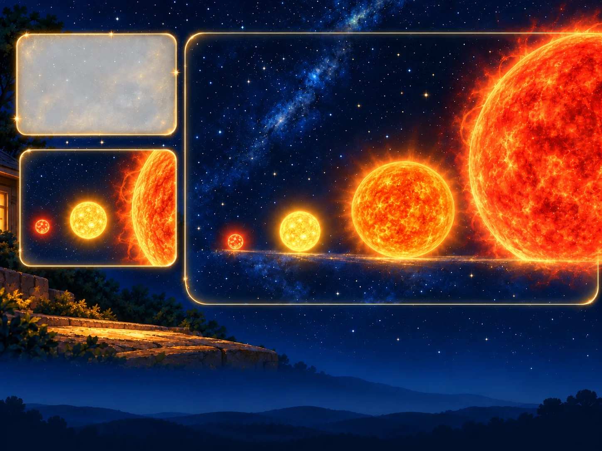

Some stars are enormousAnd ours is a middle one
Bring the stars in one at a time and stand them side by side. Watch what happens to our Sun as the bigger ones arrive.
Ari: “Wait. Where did our Sun go?”
Red dwarfs are the
most common
stars of all.
most common
stars of all.
Diameter:
about
1.39 million km
(about 109 Earths wide)
about
1.39 million km
(about 109 Earths wide)
Arcturus, a giant,
is about 25 times
wider than the Sun.
is about 25 times
wider than the Sun.
Betelgeuse, a supergiant,
is hundreds of times
wider than the Sun.
is hundreds of times
wider than the Sun.
A red dwarf can
shine for trillions
of years.
shine for trillions
of years.